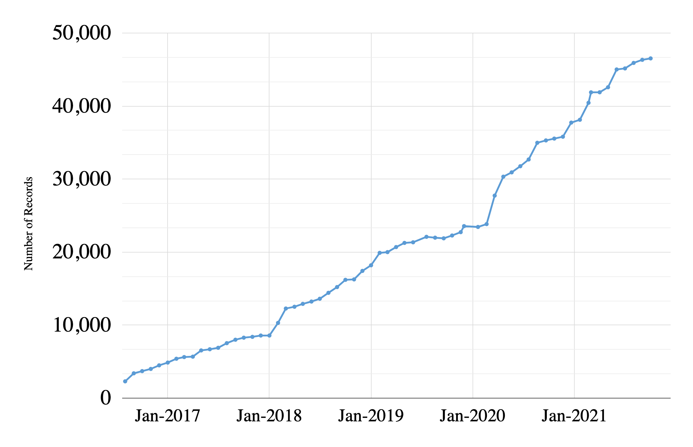
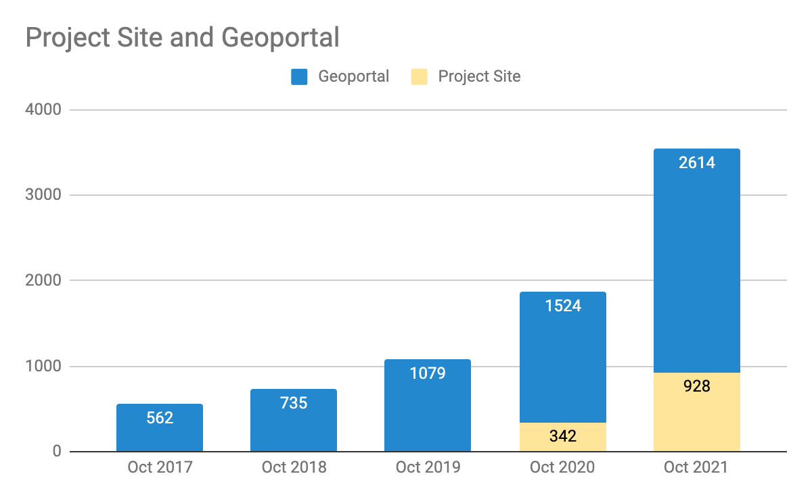
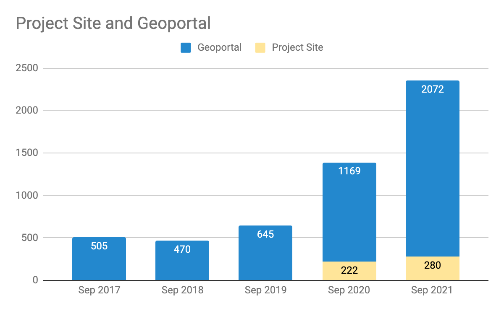
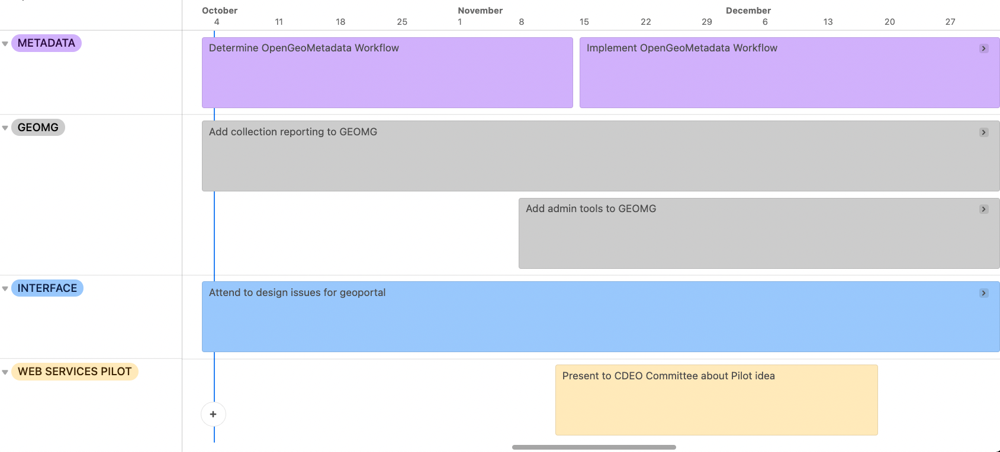
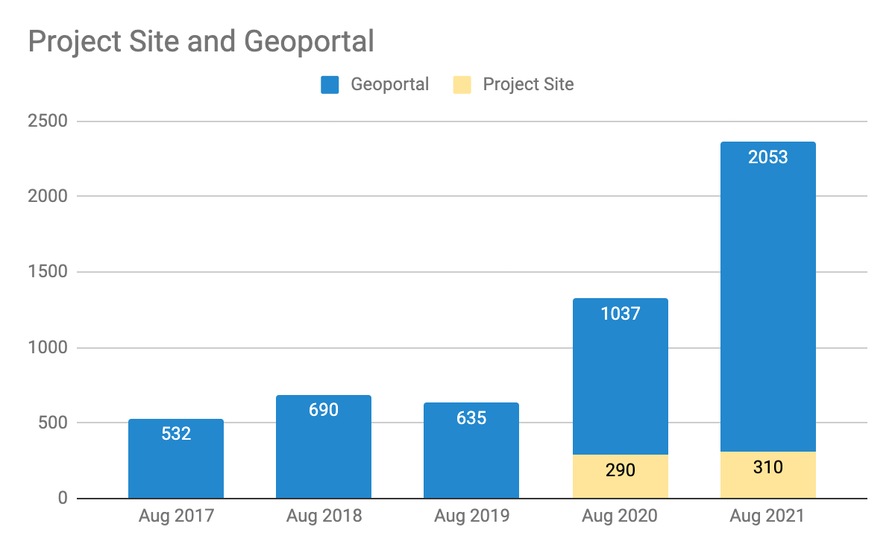

The Michigan survey plats, 1816-1860 This collection consists of 2,466 hand-drawn maps of Michigan’s townships. Between 1816 and 1860, surveyors hired by the United States General Land Office walked and measured every township line and section (mile) line in the State of Michigan. Detailed notes were taken, and from those notes sketched maps were drawn of every survey township. The original plat maps were scanned by the Archives of Michigan and are now discoverable via their websitehttps://Michiganology.org and geographically organized via the BTAA geoportal. The original plat maps of the public land survey of Michigan
4 min read
Big Ten Academic Alliance Geospatial Data Project
Project Update: October 2021
Table of Contents
Project Highlight for October
Diverse Collections Working Group Presentation
The Diverse Collections Working Group presented during the Western Association of Map Libraries Annual (WAML) Conference . They discussed the origins and purpose of the group\, which was to identify a process for defining and assessing diversity in the geoportal collections\, and to make recommendations for how diversity can be more purposefully considered and prioritized in future collection development decisions.
They also described their short-term projects\, which have focused on language representation in map collections across Big Ten institutions\, a content and format review related to several aspects of the geoportal\, and the creation of a shared educational resource on critical cartography and geospatial data ethics. Lastly\, they discussed ideas for how they hope to leverage their preliminary work into framing ongoing work through a lens of inclusion\, equity\, and social justice. View the presentation here.
Statistics: Item Records
Total Item Records
46\,532
October 2021 actions
New records
259 (layers from ArcGIS Hubs)
17 climate related records from Indiana University
Retired records
95 (mixed public geodata items)

Statistics: Geoportal & Blog Users
Geoportal & Project Site* users for the months of October (2017-2021)
*Blog\, Help\, Tutorials\, Conference info

Statistics: Top Pages in October
Top Viewed Collection Pages
Top Viewed Item Pages
Top Downloaded Items (212)
Wisconsin Historic Aerial Imagery Finder (Aerial Photos 1937-41) (227) Digital Sanborn Maps (Black & White): All States, 1867-1970 (194) General Land Office Township Plats: Michigan (37)
Digital Sanborn Maps (Black & White): California (84) Texas (70) Massachusetts (65) New Jersey (64) Michigan (63) Ohio (60)
Research Guide to Restricted or Licensed Data (73) Current Tax Sale List: City of Baltimore, Maryland (59)
County Boundaries, Wisconsin 2015 (9) + Building Footprints: Cuyahoga County, Ohio, 2016 (7) Remonumented Section Corners: Michigan (6) Building Footprints: Baltimore, Maryland (5) Geologic atlas of Dakota County, Minnesota, C-6, Plate 2, Bedrock Geology (4) + 1990-2000 Election Data (with 2020 Wards) Wisconsin, 2020 (4)
Chicago Ethnic Group Shapefiles 1868-1940 What are the items? These shapefiles show generalized majority ethnic groups in areas across Chicago from 1868, 1884, 1898, 1910, 1920, 1930, and 1940. The map and historical information presented here include materials reflecting the attitudes, language, and stereotypes of an earlier time period. These materials are presented as historical resources in support of study and research. Inclusion of such materials does not constitute an endorsement of their content by the BTAA Geoportal or the University of Chicago. What BTAA Library submitted the item? University of Chicago Interesting tidbits:
* The
By Jaime Martindale. In recent years, the University of Wisconsin-Madison has made improving access to LiDAR and aerial imagery a priority in the B1G Geoportal. Building on the popularity of the historic1937-1941 aerial photos of Wisconsin, (one of the most popular resources in the B1G Geoportal for several years running) our current focus has been on enhancing discovery to more current aerial imagery and LiDAR elevation data currently housed within the WisconsinView repository. WisconsinView.org (part of the University of Wisconsin-Madison’s Space Science and Engineering Center) serves as the repository for remotely sensed data in Wisconsin -- from LiDAR and
By Cecilia Smith. Seventy five local communities in Chicago, distribution of Committee of Fifteen cases for 1930 What is the item? This is a map of “vice resorts” in Chicago, or places where prostitution took place during the year 1930. These areas were identified by the Chicago Committee of the Fifteen, whichformed in 1908 to fight “vices” in the city. Major subjects of their investigations were pandering, prostitution, crime, homosexual sex, and interracial relationships. The locations are overlaid on the 75 community areas that existed at the time. It was originally published in Walter Reckless’ Vice in Chicago (1933).
4 min read
Big Ten Academic Alliance Geospatial Data Project
Project Update: September 2021
Table of Contents
Project Highlight for September
GeoBlacklight version 4.0 Alpha
The GeoBlacklight Community recently completed another Summer Sprint\, held from August 30 to September 3\, 2021. Staff members of the BTAA GDP provided leadership roles for the Usability and the Application Development tracks.
The overarching goal of this sprint was to develop a Version 4 alpha release to support the Aardvark Metadata Profile . Other activities included maintenance updates\, updating the project website\, assessing existing metadata tools\, and improving the application’s fixture (sample) metadata records. Read more on the GeoBlacklight blog here.
Statistics: Item Records
Total Item Records
46\,336
September 2021 actions
New record sources
394 (MN scanned maps)
Retired records
126 (mixed public geodata items)
Statistics: Geoportal & Blog Users
Geoportal & Project Site* users for the months of September (2017-2021)
*Blog\, Help\, Tutorials\, Conference info

Statistics: Top Pages in September
Top Viewed Collection Pages
Top Viewed Item Pages
Top Downloaded Items (212)
Wisconsin Historic Aerial Imagery Finder (Aerial Photos 1937-41) (184) Digital Sanborn Maps (Black & White): All States, 1867-1970 (154) City of Baltimore GIS Open Data (36)
Digital Sanborn Maps (Black & White): Michigan (79) Virginia (53) Illinois (52) Ohio (48) California (42) Massachusetts (42) Research Guide to Restricted or Licensed Data (46) Remonumented Section Corners: Michigan (37)
Key Sheet Grid: Baltimore County, Maryland(6) + Building Footprints: Cuyahoga County, Ohio, 2016 (6) Kent County Parcel Data: Grand Rapids, Michigan (4) + Research Guide to Restricted or Licensed Data (4) Topography 2 Foot Contours: Washington, D.C. (4) + Contour 2ft: City of Baltimore, Maryland (4)
+ New to top pages
Tech Roadmap: Q4 2021

Activities: Committees
Metadata Committee
Proposing change to Publisher/Creator/Provider usage
Collection Development & Education Outreach Committee
Find all of our educational tutorials here. Expanding upon the collection of tutorials produced last semester, the BTAA Geospatial Data Project has published a fresh set of tutorials to assist in the instruction and learning of GIS techniques using geospatial data from the BTAA Geoportal. Once again, the tutorials were designed the needs of instructors and students for detailed step-by-step explanations, but with the goal of transferring more advanced GIS skills to learners. This second collection contains the following five tutorials as slides that can be incorporated into in-person, hybrid, or fully online instructional contexts. Georeference
By Theresa Quill and Jennifer Liss This interview is part of our Data Provider Series, which highlights local governments and institutions that offer open GIS data. In each interview, providers tell us about their missions and data resources. We hope this will be a great way for readers to learn more about local GIS developments and new initiatives. Name:*
* Laura Haley Title:
* GIS Manager Division/Department:
* Indiana Geological & Water Survey *Website:
* https://bloomington.in.gov/gis
City of Bloomington Logo
####
Which departments(s) in your city is the steward of your geospatial data? What other activities
4 min read
Big Ten Academic Alliance Geospatial Data Project
Project Update: August 2021
Table of Contents
Project Highlight for August
New Educational Tutorials
The Education Outreach Working Group published five new educational tutorials this month to anticipate the Fall ‘21 semester. The new topics include georeferencing\, digitizing\, LiDAR\, Python Notebooks\, and Story Maps. The new collection of tutorials represent more advanced topics than our earlier introductory lessons.
All of the tutorials were designed to meet the needs of instructors and students for detailed\, step-by-step explanations that address foundational to complex GIS skills. The exercises can be incorporated into in-person\, hybrid\, or fully online instructional contexts.
Geoportal & Project Site* users for the months of August (2017-2021)
*Blog\, Help\, Tutorials\, Conference info

Statistics: Top Pages in August
Top Viewed Collection Pages
Top Viewed Item Pages
Top Downloaded Items (212)
Wisconsin Historic Aerial Imagery Finder (Aerial Photos 1937-41) (158) Digital Sanborn Maps (Black & White): All States, 1867-1970 (128) PennPilot (Historical Aerial Photo Library): Pennsylvania (23) General Land Office Township Plats: Michigan (22)
Digital Sanborn Maps (Black & White): Virginia (67) Digital Sanborn Maps (Black & White): California(60) Research Guide to Restricted or Licensed Data (49)
Regional Landscape Ecosystems of Michigan, Minnesota, and Wisconsin (10) + Research Guide to Restricted or Licensed Data (6) Contours 1ft Area 01: Cook County, Illinois, 2008 (6) + Remonumented Section Corners: Michigan (5) Contour 2ft: City of Baltimore, Maryland (5) + Rail Line Historical: Iowa (5) +
+ New to top pages
Activities: Committees
Metadata Committee
Discussing Publisher/Creator/Provider usage with specific examples where all three are different
Collection Development & Education Outreach Committee
First meeting on Wed\, 8/25. Regular meetings will be 4th Wed. of month\, 1pm Central.
Working on reviewing and updating Charter (to be completed by Sep. 22 meeting)
Created brainstorming document to keep track of ideas and possible committee projects
Communications Committee
Reconvened Mon. 8/30; regular meetings will resume (4th Monday of month\, 1pm Central)
Reviewed & updated Charter. Still working on Communications Strategy.
Blog post Sprint planned for September 24th.
Interface Committee
Finalized charter
Scheduled visits from other committee co-chairs visit Interface throughout this academic year.
developing regular internal user tests to catch bugs and test features
Activities: Working Groups
Diverse Collections Working Group
Encouraging the group to surface “radical” ideas to bring to steering/task force and that could possibly inform the work of various committees during the current two-year term
Finalizing abstract for presentation at the WAML virtual conference (Oct. 26-29)
September: Release of GeoBlacklight Version 4 that supports the updated metadata schema (Aardvark)
November: Second BTAA GIS Virtual Conference coming in November
October-December: Geoportal homepage and interface design refresh
What are the items? These maps show the Eastern Saline Wetlands areas of Lancaster and Saunders counties, Nebraska. The first map identifies the three categories of saline wetlands with Category 1 being of the highest quality. The aerial map identifies the names of the wetland areas.
What BTAA Library submitted the item? University of Nebraska Lincoln
####
Interesting tidbits:
* The Eastern Saline Wetlands once covered an area of over 200,000 acres. Today, because of the drainages of Salt Creek, Little Salt Creek and Rock Creek and residential, commercial and agricultural development, the area is only around 4,000 acres (Lincoln Parks & Recreation, 2021).
* The Eastern Saline Wetlands is habitat for many endangered plants, birds, and other wildlife. Two endangered species are the Salt Creek Tiger Beetle and the Plains Harvest Mouse.
* Nebraska has four naturally occurring regional wetland complexes that combined cover around 1,500,000 acres. Where can I find out more?
*
* https://mediacommons.unl.edu/luna/servlet/UNL126126 is a link to a University of Nebraska-Lincoln collection of more maps and other images of the Eastern Saline Wetlands. This collection was created and contributed by Tom Malmstrom, the Natural Resources Coordinator for Lincoln Parks & Recreation, and the Lower Platte South Natural Resource District Check out more items from the University of Nebraska's Image and Multimedia Collections in the BTAA Geoportal here. Have questions about this item, the BTAA geoportal, or maps and geospatial data in general? Please don’t hesitate tocontact our project team! Margaret Mering is the Metadata Quality Librarian at the University of Nebraska-LincolnThis was originally posted on blogger here*.